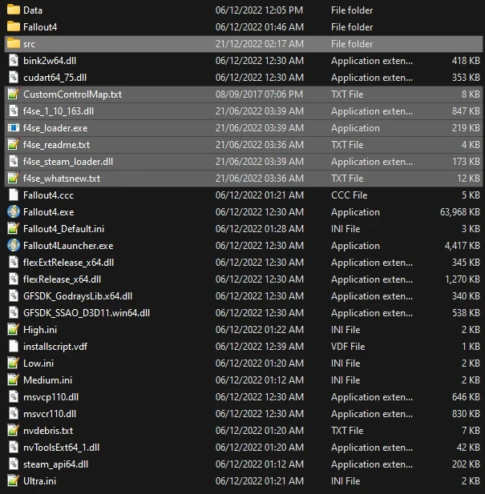

Utilities
Installation instructions:
- Main Files - Fallout 4 Script Extender (F4SE) (Manual download).
- From the downloaded archive, extract everything to the game's Root folder.
If you do not know what the Root folder is, read the Key Terminology section from the Setup page.
-
After proper install, your Root Folder should look like this:

Installation instructions:
- Main Files - xSE PluginPreloader F4 0.2.5.1 (Manual download).
- From the downloaded archive, extract everything to the game's Root folder.
Creating a Separator in MO2.
- Right-click the empty space in the left pane of MO2 and select Create separator.
- Name the separator Utilities.
PrivateProfileRedirector F4 - Faster game start (INI file cacher)
Installation instructions:
- Main Files - PrivateProfileRedirector F4 0.5.3 (Runime 1.10.163)
- If you see a pop-up called No category found, select Disable.
This is the first mod in the guide that is installed with the Mod Manager Download button, you will need to click that button then head to the Downloads section of Mod Organizer 2 to install it. Once installed, make sure you check the box next to it in the left pane of MO2 to enable it.
Address Library for F4SE Plugins
Installation instructions:
- Main Files - Address Library
Installation instructions:
- Main Files - Console Commands Extender
Installation instructions:
- Main Files - Better Console
Installation instructions:
- Main Files - High FPS Physics Fix
- Once the mod has been installed, double-click on it in the left pane of MO2
- In the INI-Files tab, select
F4SE/Plugins/HighFPSPhysicsFix.ini - Change the following options:
- Set InGameFPS to a value you want the game FPS to be locked to (line 58) If you set InGameFPS to a value higher than 60:
- Set DynamicUpdateBudget to true (line 264)
- Set BudgetMaxFPS to the same value as InGameFPS (line 283)
- Set AllowTearing to true (line 26)
- Set FramerateLimitMode to 1 (line 92)
Installation instructions:
- Main Files - Long Loading Times Fix
Installation instructions:
- Main Files - RobCo Patcher
Installation instructions:
- Main Files - Baka MaxPapyrusOps
Installation instructions:
- Main Files - Random Encounter Framework